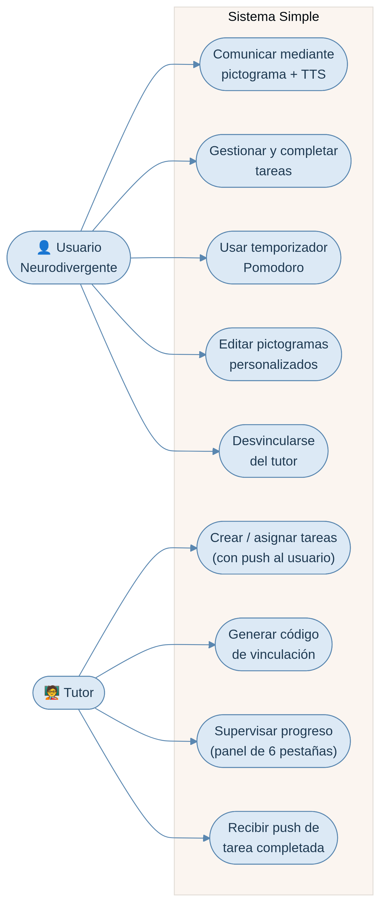
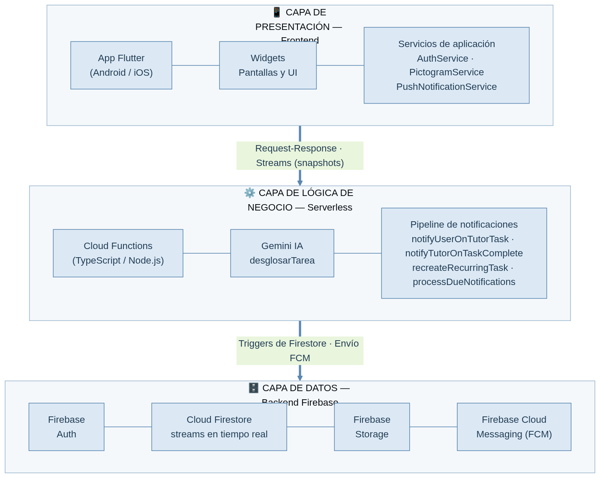
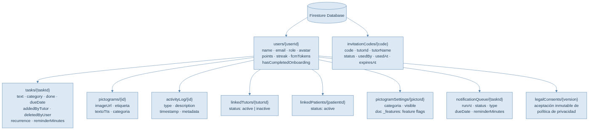
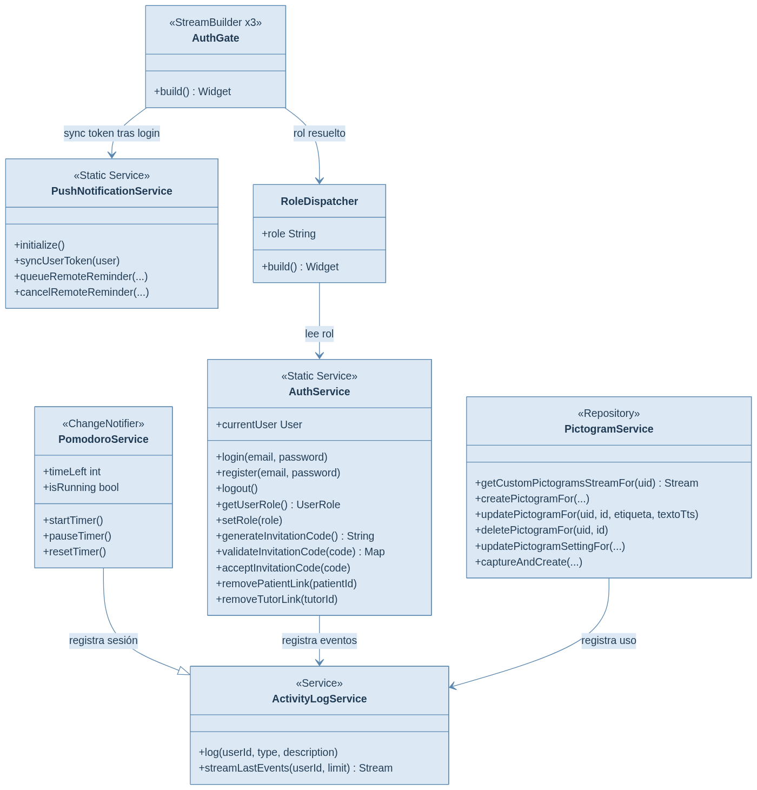
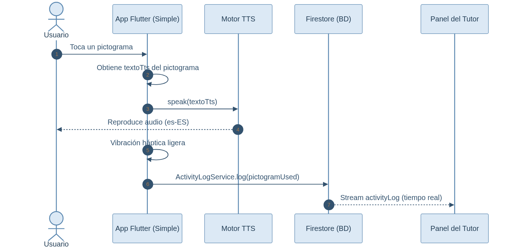
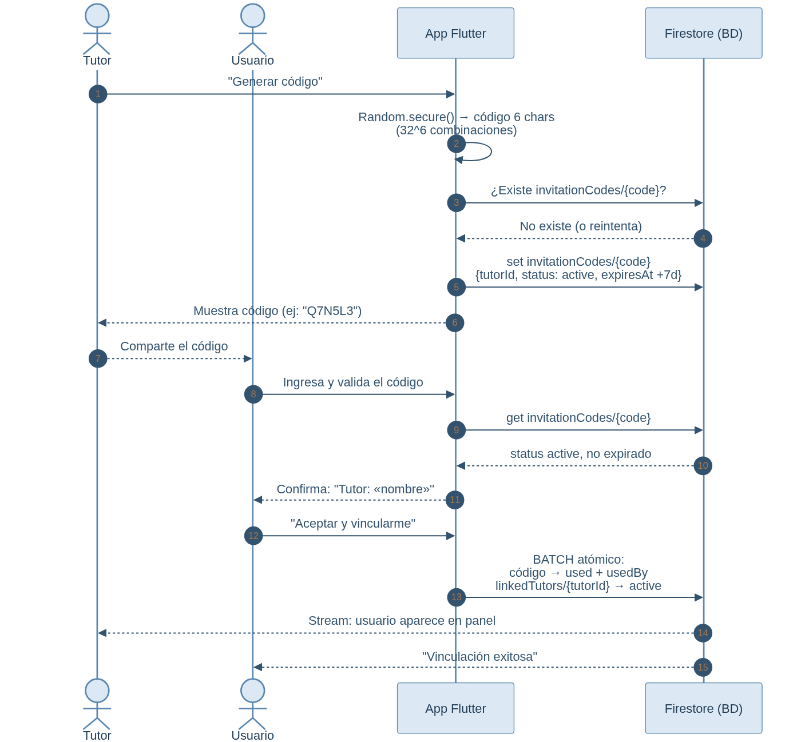
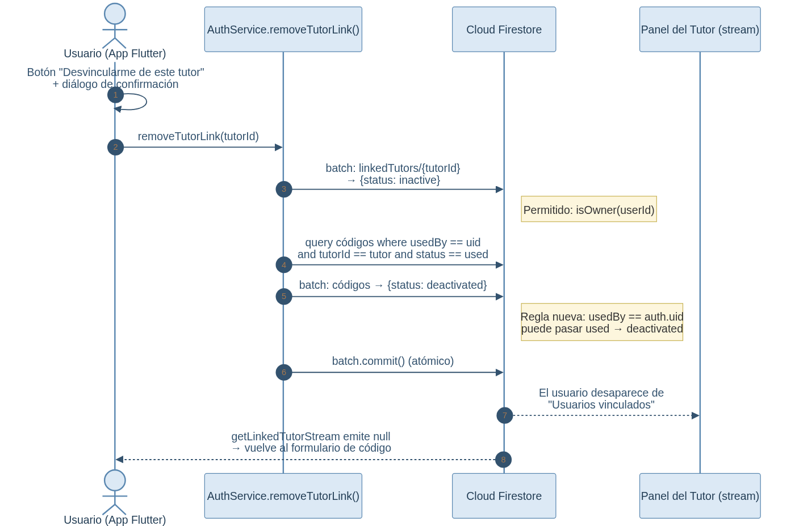
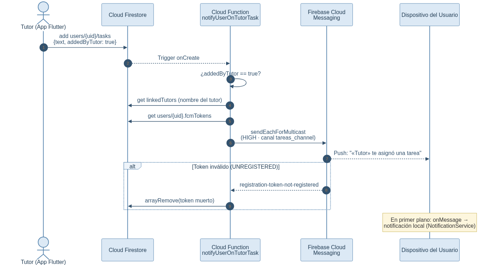
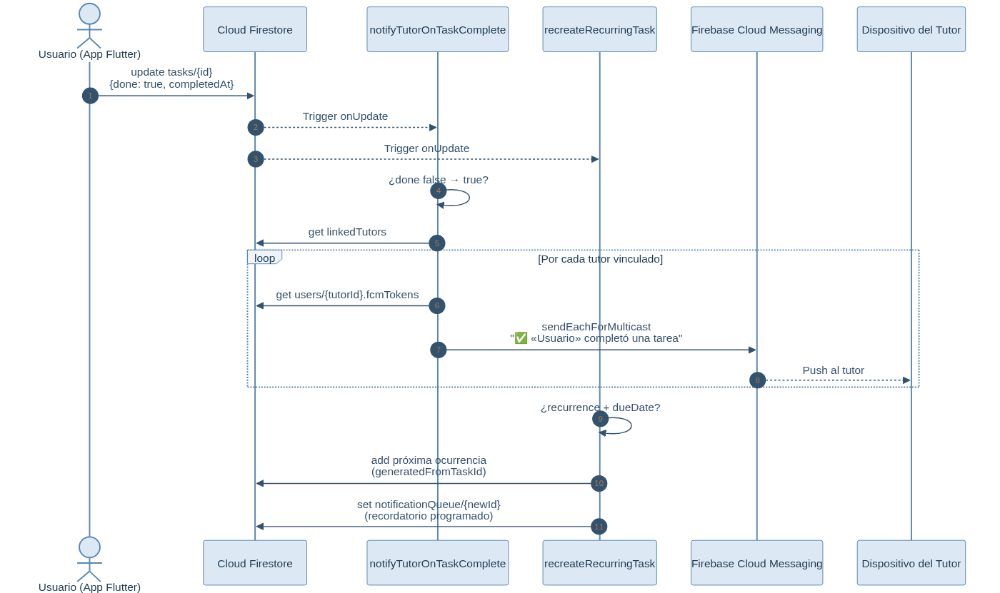
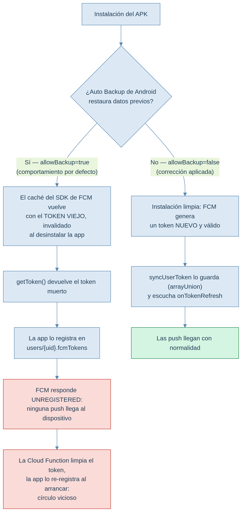

Simple
Prótesis Cognitiva para Usuarios Neurodivergentes
Informe Técnico para Defensa de Título
| Campo | Valor |
|---|---|
| Nombre del Proyecto | Simple |
| Alumno(s) | Pablo Mardones – Neftalí Arriagada |
| Carrera | Analista Programador |
| Institución | CFT De La Región De La Araucanía – Sede Angol |
| Profesor Guía | Franco Quintana Morgado |
| Fecha de Defensa | 28/07/2026 |
En primer lugar, doy gracias a Dios por darme la firmeza para no bajar los brazos. A mi familia, por ser mi motor y creer en mí con los ojos cerrados, y a todas las personas que me sostuvieron cuando la carga se sentía demasiado pesada. En esos días donde el agotamiento de hacer malabares entre el trabajo, los estudios y la vida diaria casi me hacen tirar la toalla, ustedes fueron mi cable a tierra. De todo este camino me llevo una convicción que quiero dejar plasmada: nunca dejes que nadie te diga que no puedes, que no sirves o que tu tiempo ya pasó. Sigue adelante y no dejes de pelear por lo tuyo. Nos malacostumbraron a creer que el éxito es correr y desgastarse para llegar primero a la meta, pero esto no se trata de quién llega antes o quién llega último. Se trata de avanzar a tu propio ritmo, con tus propios pasos, y de alcanzar tus sueños en tu momento justo.
"Ubuntu". Yo soy porque nosotros somos. Hoy, al dar término a esta tesis, entiendo la verdad absoluta de esas palabras. Este trabajo lleva nuestros nombres, pero le pertenece a cada una de las personas que me guiaron y creyeron en mí. Gracias por ser la comunidad que hizo posible mi camino.
Simple es una aplicación móvil desarrollada como prótesis cognitiva dirigida a personas neurodivergentes, con énfasis en usuarios con Trastorno por Déficit de Atención e Hiperactividad (TDAH) y Trastorno del Espectro Autista (TEA). El sistema integra pictogramas del sistema ARASAAC para facilitar la comunicación aumentativa y alternativa (CAA), junto con módulos de gestión de tareas, temporizador Pomodoro, historial de actividad, notificaciones push remotas y supervisión remota por tutores. La arquitectura del sistema se basa en un modelo cliente-servidor donde el cliente es una aplicación móvil multiplataforma desarrollada en Flutter/Dart, y el backend se implementa mediante Firebase (Firestore, Authentication, Storage, Cloud Functions, Cloud Messaging). Los resultados obtenidos demuestran que una interfaz simplificada basada en pictogramas mejora significativamente la autonomía de usuarios neurodivergentes en la organización de rutinas diarias. El público objetivo se define por perfil funcional más que por edad: abarca desde niños en edad escolar, acompañados por un tutor, hasta adolescentes y adultos que gestionan sus rutinas de forma autónoma.
Simple is a mobile application developed as a cognitive prosthesis aimed at neurodivergent individuals, with emphasis on users with ADHD and Autism Spectrum Disorder (ASD). The system integrates ARASAAC pictograms to facilitate Augmentative and Alternative Communication (AAC), along with task management modules, Pomodoro timer, activity history, remote push notifications, and remote supervision by tutors. The system architecture follows a client-server model with a cross-platform mobile client built in Flutter/Dart, and a backend implemented using Firebase (Firestore, Authentication, Storage, Cloud Functions, Cloud Messaging). Results demonstrate that a simplified pictogram-based interface significantly improves autonomy for neurodivergent users in organizing daily routines.
Palabras clave: Prótesis cognitiva, neurodivergencia, TDAH, TEA, ARASAAC, Flutter, Firebase, comunicación aumentativa, notificaciones push, aplicación móvil.
Nota: actualizar los números de página con la tabla de contenido automática de Word (Referencias → Tabla de contenido) una vez finalizada la maquetación; los títulos ya están con estilos de encabezado.
2. Agradecimientos · 3. Resumen (Abstract) · 4. Índice de Contenido, Tablas y Figuras · 5. Introducción · 6. Planteamiento del Problema y Justificación · 7. Objetivos · 8. Estado del Arte y Marco Teórico · 9. Metodología · 10. Análisis del Sistema · 11. Diseño del Sistema · 12. Desarrollo e Implementación · 13. Pruebas del Sistema · 14. Resultados y Evaluación · 15. Conclusiones · 16. Recomendaciones y Trabajo Futuro · 17. Bibliografía · 18. Anexos
Tabla 1: Comparativa de tecnologías similares · Tabla 2: Herramientas y recursos de desarrollo · Tabla 3: Cronograma de actividades (Sprints) · Tabla 4: Requerimientos funcionales · Tabla 5: Requerimientos no funcionales · Tabla 6: Tecnologías utilizadas por capa · Tabla 7: Cloud Functions del pipeline de notificaciones · Tabla 8: Dificultades y soluciones técnicas · Tabla 9: Pruebas de rendimiento · Tabla 10: Resultados de validación de requerimientos · Tabla 11: Cumplimiento de objetivos específicos
Figura 1: Modelo de apoyo cognitivo digital · Figura 2: Ejemplo de pictogramas ARASAAC · Figura 3: Aplicaciones de referencia (Tiimo, Routinery, Habitica) · Figura 4: Diagrama de casos de uso — Usuario y Tutor · Figura 5: Diagrama de arquitectura del sistema (3 capas) · Figura 6: Estructura de colecciones Firestore · Figura 7: Diagrama de clases principales · Figura 8: Diagrama de secuencia — Uso de pictograma con TTS · Figura 9: Diagrama de secuencia — Vinculación tutor-usuario · Figura 10: Capturas de pantalla del sistema · Figura 11: Secuencia — Asignación de tarea con push al usuario · Figura 12: Secuencia — Completado de tarea con push al tutor y recurrencia · Figura 13: Ciclo de vida del token FCM y corrección del Auto Backup · Figura 14: Secuencia — Desvinculación iniciada por el usuario
La neurodivergencia comprende variaciones naturales en el cerebro humano respecto a lo que se considera "neurotípico". Entre las condiciones más frecuentes se encuentran el Trastorno del Espectro Autista (TEA) y el Trastorno por Déficit de Atención e Hiperactividad (TDAH). Según la OMS, aproximadamente 1 de cada 100 niños tiene TEA, y el TDAH afecta alrededor del 5% de la población infantil y el 2.5% de adultos a nivel mundial.
Una de las principales dificultades enfrentadas por estas personas es la regulación ejecutiva: la capacidad de planificar, organizar, iniciar y completar tareas. Las prótesis cognitivas —herramientas tecnológicas que externalizan funciones cognitivas— han demostrado ser efectivas para compensar estas dificultades.
La motivación de este proyecto surge de la observación directa de que las aplicaciones existentes de organización personal (calendarios, recordatorios, listas de tareas) están diseñadas para usuarios neurotípicos, con interfaces complejas, alto contenido de texto, múltiples niveles de navegación y estímulos visuales que pueden resultar saturadores para personas con TEA o TDAH. Existe una brecha significativa en el mercado de aplicaciones móviles que combinen simplicidad visual, pictogramas estandarizados, comunicación aumentativa y supervisión parental/tutor en una sola plataforma integrada.
El proyecto comprende el desarrollo completo de una aplicación móvil multiplataforma (Android/iOS) con los siguientes módulos:
El presente informe se estructura en 18 secciones que abarcan desde la fundamentación teórica hasta la implementación técnica, pruebas y resultados. La sección 11 detalla la arquitectura técnica del sistema, la sección 12 profundiza en los módulos de desarrollo —incluyendo el pipeline de notificaciones push y las dificultades técnicas resueltas durante la estabilización—, la sección 13 documenta las pruebas realizadas y la sección 16 propone mejoras futuras.
Las personas neurodivergentes enfrentan desafíos específicos en la organización diaria:
La justificación técnica se fundamenta en la hipótesis de carga cognitiva: una interfaz que externaliza la memoria de trabajo y reduce la toma de decisiones ejecutivas (mediante pictogramas, estructuras predefinidas y retroalimentación multisensorial) disminuye la carga cognitiva del usuario, permitiendo una mayor eficiencia en la ejecución de rutinas.
El sistema no se define por un rango de edad rígido, sino por un perfil funcional. Simple está dirigido a personas neurodivergentes con TEA de nivel 1 o TDAH que conservan la autonomía necesaria para interactuar con una interfaz visual: reconocer pictogramas, tocar la pantalla y responder a notificaciones. Quedan fuera del alcance los casos que requieren un alto nivel de apoyo, donde la interacción autónoma con una aplicación no es viable.
Esta definición funcional se traduce en un rango etario amplio, sostenido por la arquitectura de doble rol del sistema. El rol tutor cubre a menores o personas que requieren supervisión; el rol usuario opera de forma autónoma en adolescentes y adultos. Así, el público abarca desde la edad escolar (aproximadamente 8 años, con acompañamiento de un tutor) hasta la adultez, donde el usuario gestiona sus rutinas de manera independiente.
El proyecto se concibió pensando en niños, pero las pruebas de usabilidad evidenciaron que la herramienta también resulta efectiva en adolescentes y adultos. Entre los participantes hubo usuarios de 14 y 22 años, y el feedback recogido confirmó que las notificaciones push y la organización visual de tareas son útiles más allá de la infancia, funcionando en la práctica como una agenda cognitiva. La validación a mayor escala, segmentada por rango etario, se plantea como trabajo futuro.
Desarrollar una aplicación móvil multiplataforma que funcione como prótesis cognitiva para personas neurodivergentes (TDAH y TEA), integrando pictogramas ARASAAC, gestión de tareas, temporizador Pomodoro, comunicación aumentativa y supervisión remota por tutores, mediante una arquitectura cliente-servidor basada en Flutter, Firebase y Node.js/Cloud Functions.
role del usuario en Firestore.Las prótesis cognitivas digitales corresponden a herramientas tecnológicas de apoyo externo que facilitan funciones cognitivas y ejecutivas como la memoria, la atención, la planificación, la organización y la gestión del tiempo. En el contexto actual, estas herramientas pueden adoptar la forma de aplicaciones móviles, recordatorios, agendas electrónicas, temporizadores, sistemas de navegación por pasos e interfaces visuales diseñadas para apoyar la autonomía del usuario.
Si bien parte de la literatura sobre apoyo cognitivo surge en el ámbito de la rehabilitación neuropsicológica, en esta investigación el concepto se aborda desde una perspectiva funcional orientada a personas neurodivergentes, especialmente aquellas que presentan dificultades en la organización de actividades cotidianas. Desde esta mirada, una aplicación móvil puede actuar como una prótesis cognitiva digital al reducir la sobrecarga cognitiva y favorecer el seguimiento de rutinas y tareas.
Figura 1: Representación conceptual de una herramienta digital de apoyo cognitivo orientada a facilitar funciones ejecutivas como memoria de trabajo, atención, planificación y organización en personas neurodivergentes. Fuente: Elaboración propia.
La Comunicación Aumentativa y Alternativa (CAA) reúne distintos recursos que ayudan a complementar o reemplazar la comunicación oral cuando una persona necesita otro medio para expresarse o comprender mejor la información. Dentro de estos recursos se encuentran los pictogramas, imágenes, símbolos, gestos y herramientas tecnológicas adaptadas a las necesidades de cada usuario.
En este contexto, ARASAAC, Centro Aragonés de Comunicación Aumentativa y Alternativa, ofrece pictogramas y materiales de apoyo utilizados en comunicación y accesibilidad cognitiva. Sus recursos permiten representar acciones, objetos, rutinas e instrucciones de forma visual, lo que resulta útil en contextos educativos, terapéuticos y cotidianos, especialmente cuando se requiere entregar información de manera más clara y estructurada.
Para este proyecto, los pictogramas no se consideran únicamente como una herramienta para sustituir el habla, sino también como un apoyo visual para facilitar la comprensión de rutinas, tareas y secuencias de pasos. Esto se relaciona directamente con el diseño de una aplicación orientada a personas neurodivergentes, ya que el uso de apoyos visuales puede favorecer la anticipación, la organización y el seguimiento de actividades diarias.
Figura 2: Ejemplo de pictogramas ARASAAC. Fuente: https://tacte.es/los-sistemas-aumentativos-y-alternativos-de-comunicacion/
El Trastorno por Déficit de Atención e Hiperactividad (TDAH) se relaciona con dificultades en funciones ejecutivas, especialmente en procesos como la inhibición conductual, la memoria de trabajo, la autorregulación, la organización, la planificación y la gestión del tiempo. Según Barkley (2012), estas funciones cumplen un rol importante en la conducta dirigida a metas, ya que permiten organizar acciones, mantener el esfuerzo y regular la respuesta frente a distintas demandas de la vida diaria.
En este contexto, las personas con TDAH pueden presentar dificultades para iniciar tareas, mantener la concentración, recordar actividades pendientes, seguir rutinas o finalizar acciones planificadas. Esto no significa falta de autonomía, sino que muchas veces requieren apoyos externos que ayuden a estructurar la información, reducir la carga mental y facilitar el seguimiento de actividades.
Las herramientas digitales pueden cumplir un rol de apoyo en este proceso mediante recordatorios, calendarios, temporizadores, listas de tareas, seguimiento de hábitos y sistemas de retroalimentación. Aplicaciones como Tiimo, Routinery y Habitica son antecedentes relevantes, ya que abordan distintos aspectos asociados a la organización personal: Tiimo se orienta a la planificación visual y al apoyo de funciones ejecutivas; Routinery permite crear y seguir rutinas paso a paso; y Habitica utiliza la gamificación para motivar el cumplimiento de tareas y hábitos.
Sin embargo, estas aplicaciones se enfocan en áreas específicas y no necesariamente integran en una sola solución todos los elementos considerados en este proyecto, como la organización de tareas, recordatorios, rutinas guiadas, seguimiento de progreso, retroalimentación y mecanismos de acompañamiento o supervisión. Por esta razón, su análisis permite identificar oportunidades para el diseño de una herramienta más ajustada a las necesidades de usuarios neurodivergentes en contextos cotidianos, académicos y familiares.
Figura 3: Aplicaciones de referencia para planificación visual, rutinas y gamificación de tareas. Fuente: Sitios oficiales (routinery.app, tiimoapp.com, habitica.com). Las marcas, interfaces y elementos visuales pertenecen a sus respectivos propietarios.
Para situar la propuesta se analizaron tres aplicaciones de referencia, cada una sólida en una dimensión distinta de la organización personal:
Tabla 1: Comparativa de tecnologías similares
| Aplicación | Pictogramas | Supervisión Tutor | Pomodoro | CAA | Multiplataforma |
|---|---|---|---|---|---|
| LetMeTalk | Sí (ARASAAC) | No | No | Sí | Sí |
| Pictogram Agenda | Sí | No | No | Limitada | Sí |
| Choiceworks | Sí | No | No | Sí | No (iOS only) |
| Todoist | No | No | No | No | Sí |
| Habitica | No | No | No | No | Sí |
| Tiimo | No | No | Sí | No | Sí |
| Routinery | No | No | Sí | No | Sí |
| Simple (este proyecto) | Sí | Sí | Sí | Sí | Sí |
Cada una de estas aplicaciones resuelve bien su nicho, pero de forma aislada. La diferenciación de Simple está en la integración: reúne en una sola herramienta la planificación visual, las rutinas paso a paso y la gamificación que las apps de referencia ofrecen por separado. A esto suma dos elementos que ninguna contempla: la separación de usuarios según sus necesidades y el rol tutor–usuario, que permite acompañar y supervisar sin quitar autonomía. Todo dentro de un mismo ecosistema, multiplataforma y de bajo costo operativo, con comunicación aumentativa basada en pictogramas ARASAAC. En esa intersección se encuentra la brecha (gap) que este proyecto busca cubrir.
Flutter es un framework UI de Google para construir aplicaciones nativas compiladas para móvil, web y desktop desde un único código base en Dart. Utiliza un motor de renderizado propio (Skia) que garantiza 60/120 FPS consistentes. Su modelo de widgets reactivos (declarativos) permite construir interfaces altamente personalizables, fundamental para adaptar la UI a necesidades específicas de neurodivergencia.
Firebase proporciona: Cloud Firestore (base de datos NoSQL documental con sincronización en tiempo real), Firebase Authentication (autenticación multi-proveedor), Firebase Storage (almacenamiento de imágenes de pictogramas), Cloud Functions (funciones serverless TypeScript/Node.js), y Firebase Cloud Messaging para notificaciones push cross-platform.
El proyecto implementa una variante de Model-View-ViewModel (MVVM) combinada con Repository Pattern. Esto permite desacoplar la UI de la lógica de negocio y de la fuente de datos (Firebase), facilitando pruebas unitarias y futuras migraciones de backend.
Se adoptó una metodología ágil adaptada, basada en Scrum con sprints de 2 semanas. Esta elección se justifica por la incertidumbre de requisitos (las necesidades de usuarios neurodivergentes que emergen durante la interacción), la necesidad de retroalimentación frecuente con usuarios reales, y la complejidad técnica de la integración de múltiples servicios Firebase.
Tabla 2: Herramientas y recursos de desarrollo
| Categoría | Herramienta | Propósito |
|---|---|---|
| IDE | Visual Studio Code + Android Studio | Desarrollo y depuración |
| Control de versiones | Git + GitHub | Versionado del código fuente |
| Diseño UI | Figma | Prototipado y diseño visual |
| Gestión de proyecto | Notion / Trello | Backlog y seguimiento de sprints |
| API Testing | Postman | Pruebas de Cloud Functions |
| Unit testing | flutter_test, mockito | Pruebas unitarias y de widgets |
| Integration testing | Firebase Emulator Suite | Pruebas locales sin conexión a Firebase |
| Usability testing | SUS Scale + observación directa | Validación con usuarios reales |
| Diagnóstico en producción | API REST Firestore/FCM + firebase functions:log | Análisis de incidencias sobre datos reales |
Tabla 3: Cronograma de actividades (Sprints)
| Sprint | Duración | Objetivos principales |
|---|---|---|
| Sprint 0 | 2 semanas | Configuración del entorno, arquitectura base, autenticación Firebase |
| Sprint 1 | 2 semanas | Módulo de pictogramas ARASAAC, categorías, navegación por tabs |
| Sprint 2 | 2 semanas | Síntesis de voz (TTS), gestión de pictogramas personalizados (cámara + crop) |
| Sprint 3 | 2 semanas | Módulo de tareas, categorías, notificaciones locales |
| Sprint 4 | 2 semanas | Temporizador Pomodoro, sonidos, vibración, estadísticas de foco |
| Sprint 5 | 2 semanas | Sistema de vinculación tutor-usuario, códigos de invitación |
| Sprint 6 | 2 semanas | Panel de supervisión del tutor, modo Kiosk, configuración de pestañas |
| Sprint 7 | 2 semanas | Respaldo Google Drive, perfil, avatares, IA SuperExperto (Gemini) |
| Sprint 8 | 2 semanas | Pruebas de integración, debugging, optimización de rendimiento |
| Sprint 9 | 2 semanas | Pruebas con usuarios reales, recolección de feedback, ajustes finales |
| Sprint 10 | 2 semanas | Pipeline de notificaciones push (FCM + Cloud Functions), consentimiento de privacidad |
| Sprint 11 | 2 semanas | Estabilización: corrección de defectos críticos (códigos de invitación, tokens FCM, desvinculación bidireccional, edición de pictogramas), documentación y preparación de la defensa |
Tabla 4: Requerimientos funcionales
| ID | Requerimiento | Prioridad | Módulo |
|---|---|---|---|
| RF-01 | Autenticación con email/contraseña y Google Sign-In | Alta | Auth |
| RF-02 | Selección de rol (usuario / tutor) al registrarse | Alta | Auth |
| RF-03 | Visualizar pictogramas ARASAAC por categorías (Mañana, Tarde, Noche, Comida, Emociones, Acciones) | Alta | Pictogramas |
| RF-04 | Crear pictogramas personalizados con fotos de cámara o galería | Alta | Pictogramas |
| RF-05 | Reproducir texto en voz (TTS) al tocar un pictograma | Alta | Pictogramas |
| RF-06 | Gestionar tareas con categorías, fechas y estados (pendiente/completada/eliminada) | Alta | Tareas |
| RF-07 | Enviar notificaciones locales para recordatorios de tareas | Media | Tareas |
| RF-08 | Temporizador Pomodoro configurable (5, 15, 25, 50 min o personalizado) | Media | Foco |
| RF-09 | El tutor genera códigos de invitación de 6 caracteres para vincular usuarios | Alta | Vinculación |
| RF-10 | El tutor supervisa tareas, pictogramas, progreso e historial del usuario vinculado | Alta | Supervisión |
| RF-11 | El tutor configura qué pestañas son visibles para el usuario (feature toggles) | Media | Supervisión |
| RF-12 | El tutor activa/desactiva el modo Kiosk (bloqueo de navegación en la app) | Media | Supervisión |
| RF-13 | Registrar log de actividad (tareas completadas, pictogramas usados, sesiones Pomodoro) | Media | Historial |
| RF-14 | Respaldar configuración a Google Drive y restaurar desde él | Baja | Backup |
| RF-15 | Botón SOS de contacto de emergencia con llamada directa | Media | Seguridad |
| RF-16 | Enviar notificación push inmediata al usuario cuando el tutor le asigna una tarea, y al tutor cuando el usuario completa una tarea | Alta | Notificaciones |
| RF-17 | Programar recordatorios remotos de tareas mediante cola en Firestore (notificationQueue) procesada por Cloud Functions, operativos aunque la app esté cerrada | Media | Notificaciones |
| RF-18 | Permitir la desvinculación bidireccional: tanto el tutor como el usuario pueden terminar el vínculo desde su propia pantalla, con confirmación | Media | Vinculación |
| RF-19 | Editar pictogramas personalizados (nombre visible y texto de voz) conservando la imagen, desde el tablero del usuario y desde el gestor del tutor | Media | Pictogramas |
| RF-20 | Regenerar automáticamente las tareas recurrentes (diaria/semanal/mensual) al completarse, creando la siguiente ocurrencia con su recordatorio | Media | Tareas |
Tabla 5: Requerimientos no funcionales
| ID | Requerimiento | Categoría |
|---|---|---|
| RNF-01 | La interfaz debe responder en menos de 100ms para toques de pictogramas | Rendimiento |
| RNF-02 | Las imágenes de pictogramas deben cargarse en menos de 500ms (WiFi) | Rendimiento |
| RNF-03 | Funcionalidad offline para pictogramas predefinidos (SVG en assets) | Disponibilidad |
| RNF-04 | Notificaciones con margen de error de ±30 segundos | Fiabilidad |
| RNF-05 | Contraste de colores WCAG 2.1 nivel AA (ratio mínimo 4.5:1) | Accesibilidad |
| RNF-06 | Elementos táctiles mínimo 48x48dp (Material Design guidelines) | Accesibilidad |
| RNF-07 | Reglas Firestore que impidan acceso no autorizado a datos de otros usuarios | Seguridad |
| RNF-08 | Código conforme a guías de estilo Flutter (Effective Dart) | Mantenibilidad |
| RNF-09 | Soporte Android 5.0+ (API 21) y iOS 12+ | Compatibilidad |
| RNF-10 | Consumo de batería inferior al 5% por hora de uso activo | Eficiencia |

Figura 4: Diagrama de casos de uso — Usuario y Tutor. Fuente: Elaboración propia.
Actores: Usuario neurodivergente (rol: usuario), Tutor (rol: tutor), Sistema (Firebase, TTS, notificaciones).
activityLog.| Rol | Descripción | Permisos principales |
|---|---|---|
| usuario | Persona neurodivergente (TEA/TDAH) que usa la app como prótesis cognitiva | Ver/crear tareas propias, usar pictogramas, Pomodoro, crear y editar pictogramas personalizados, desvincularse de su tutor, ver perfil |
| tutor | Padre, cuidador, profesor o terapeuta que supervisa al usuario | Generar códigos de invitación, supervisar progreso, agregar/eliminar tareas (con push), gestionar y editar pictogramas, modo Kiosk, desvincular usuarios |
| null (sin rol) | Usuario recién registrado que no ha seleccionado rol aún | Solo acceso a pantalla de selección de rol |

Figura 5: Diagrama de arquitectura del sistema (3 capas). Fuente: Elaboración propia.
El sistema implementa una arquitectura cliente-servidor de tres capas:
Modelo de comunicación:
snapshots() para sincronización en tiempo
real de tareas, pictogramas y configuraciones.Single codebase para Android e iOS reduciendo esfuerzo de mantenimiento. Renderizado consistente mediante Skia, independiente del OEM, garantizando experiencia visual uniforme crítica para usuarios con sensibilidad sensorial. El ecosistema Dart permite programación reactiva (Streams, Futures) nativa, ideal para sincronización en tiempo real con Firestore.
Backend-as-a-Service (BaaS) elimina la necesidad de configurar servidores propios. Firestore proporciona sincronización en tiempo real con optimistic UI. Las reglas de seguridad declarativas implementan RBAC a nivel de documento y campo. El escalado automático gestiona picos de tráfico sin intervención manual.
Runtime estándar de Firebase Cloud Functions. Las funciones se disparan por eventos de Firestore, implementando CQRS donde la escritura de datos dispara procesos secundarios (push de asignación/completado, regeneración de recurrencias, procesamiento de la cola de recordatorios). Facilita integración con servicios externos como la API de Gemini para descomposición de tareas.
Tabla 6: Tecnologías utilizadas por capa
| Capa | Tecnología | Versión | Propósito |
|---|---|---|---|
| Frontend | Flutter SDK | 3.3+ | Framework UI multiplataforma |
| Frontend | Dart | 3.3+ | Lenguaje de programación |
| Frontend | Provider + ChangeNotifier | ^6.1.2 | Gestión de estado (Pomodoro, config) |
| Frontend | flutter_svg | ^2.2.4 | Renderizado de pictogramas SVG |
| Frontend | flutter_tts | ^4.2.5 | Síntesis de voz local en español |
| Frontend | fl_chart | ^1.1.1 | Gráficos de progreso en panel del tutor |
| Frontend | image_picker + image_cropper | ^1.1.2 / ^8.1.0 | Creación de pictogramas personalizados |
| Frontend | vibration | ^3.1.4 | Retroalimentación háptica |
| Frontend | flutter_local_notifications | ^17.1.2 | Notificaciones locales del sistema |
| Backend | Cloud Firestore | ^4.17.3 | Base de datos NoSQL con streams |
| Backend | Firebase Auth | ^4.17.4 | Autenticación multi-proveedor |
| Backend | Firebase Storage | ^11.7.2 | Almacenamiento de imágenes |
| Backend | Firebase Cloud Messaging | ^14.9.1 | Notificaciones push |
| Backend | Cloud Functions (TypeScript) | ^4.7.4 | Wrapper Gemini AI, pipeline push, lógica serverless |
| IA | Gemini 2.0/2.5 Flash | API v1 | Descomposición de tareas en pasos simples |
| Externo | Google Sign-In | ^6.2.1 | Autenticación OAuth 2.0 |
| Externo | Google Drive API v3 | ^13.2.0 | Respaldo y restauración de datos |
| Local | SharedPreferences | ^2.2.3 | Estado del Pomodoro, flags de onboarding |
La base de datos sigue una estructura documental jerárquica:
name, email, role, avatar, points,
streak, fcmTokens, hasCompletedOnboarding.text, category, done, dueDate,
createdAt, addedByTutor, deletedByUser (soft-delete), recurrence,
reminderMinutes.imageUrl, etiqueta, textoTts, categoria.type, description, timestamp,
metadata (máx. 100 entradas por stream).status: active | inactive) — fuente de verdad de las reglas de seguridad._features para feature flags.runAt, scheduledAt, status (pending/sent/error), type, dueDate, reminderMinutes,
procesada por Cloud Functions.code, tutorId,
tutorName, status, usedBy, usedAt, expiresAt).
Figura 6: Modelo lógico de la estructura de datos implementada en Firebase Firestore. Fuente: Elaboración propia.

Figura 7: Diagrama UML de clases principales del sistema. Fuente: Elaboración propia a partir del diseño lógico del sistema.
removePatientLink / removeTutorLink).updatePictogramFor),
configuración de visibilidad/categoría y eliminación.arrayUnion, suscripción a
onTokenRefresh), la conversión de mensajes en primer plano a notificaciones locales,
y el encolado/cancelación de recordatorios remotos en notificationQueue.Estas clases permiten separar responsabilidades dentro del sistema, facilitando la organización del código, el mantenimiento de la aplicación y la integración con los servicios de Firebase.

Figura 8: Diagrama de secuencia — uso de pictograma con reproducción TTS. Fuente: Elaboración propia.

Figura 9: Diagrama de secuencia — Vinculación tutor-usuario (con generación segura y verificación de colisión). Fuente: Elaboración propia.
Figura 10: Capturas de pantalla del sistema. Fuente: Elaboración propia.
El sistema implementa un RoleDispatcher en el AuthGate que, tras la autenticación, lee el
campo role del documento Firestore del usuario y redirige a: PantallaUsuarioTEA (rol:
usuario), HomeScreen dashboard (rol: tutor), o RoleSelectionScreen (rol null). Se implementó el
patrón Strategy para la selección de pantalla según rol, combinado con arquitectura reactiva basada
en streams de Firebase Auth y Firestore. Se integró Google Sign-In con SHA-1 en Firebase Console y
registro con email/contraseña con validación robusta (mayúscula + número + mínimo 6 caracteres). En
el flujo con Google se fuerza el selector de cuentas (signOut previo) para permitir alternar entre
cuentas sin errores.
El sistema unifica dos fuentes de pictogramas mediante el patrón Repository:
assets/images/pictogramas/. Funcionan offline, se renderizan mediante flutter_svg.La configuración de categorías y visibilidad se almacena en
pictogramSettings/{pictoId}, permitiendo al tutor reorganizar el banco sin modificar
datos maestros. Fix técnico crítico: Se implementó AutomaticKeepAliveClientMixin en los
grids de categoría para persistir el estado de scroll al cambiar de pestaña en el TabBarView.
Edición sin pérdida de la imagen: en comunicación aumentativa un error de escritura no es
cosmético: el texto es el mensaje. Por ello se implementó
PictogramService.updatePictogramFor(), que actualiza parcialmente la etiqueta
(normalizada a mayúsculas con la misma regla de la creación) y el texto de voz sin tocar la imagen
de Storage. La acción está disponible en ambos roles mediante pulsación larga ("Editar nombre y
voz"): en el tablero del usuario y en el gestor de pictogramas del tutor, que comparten la misma
pantalla de gestión. Adicionalmente, el selector de categorías se convirtió en una lista
desplazable con altura máxima del 75% de la pantalla, resolviendo el corte de las últimas opciones
en dispositivos con barra de navegación de 3 botones.
Las tareas se almacenan en users/{uid}/tasks con campos: text, category,
done, dueDate, createdAt, addedByTutor, deletedByUser. Se implementó soft-delete
(deletedByUser: true) para que el tutor pueda ver tareas eliminadas, con streams del
usuario filtrando por deletedByUser != true. Las tareas del tutor aparecen marcadas
con addedByTutor: true. Se integró flutter_local_notifications con timezone para
recordatorios exactos.
Tareas recurrentes server-side: las tareas con campo recurrence
(daily/weekly/monthly) se regeneran en el servidor mediante la Cloud Function
recreateRecurringTask: al detectar la transición done: false → true,
calcula la próxima fecha de vencimiento, crea la nueva ocurrencia (trazable vía
generatedFromTaskId y visible desde availableFrom) y encola su
recordatorio en notificationQueue. Ejecutar esta lógica en servidor garantiza la
regeneración aunque el usuario cierre la app inmediatamente después de completar la tarea.
PomodoroService extends ChangeNotifier implementa una máquina de estados (trabajo →
descanso corto → descanso largo) con retroalimentación multisensorial: sonido configurable vía
audioplayers, vibración vía vibration. El servicio persiste su estado vía SharedPreferences,
sobreviviendo reinicios de la app. Se integran ejercicios de respiración guiada 4-4-6 con animación
de ciclo de 14 segundos.
Sistema de códigos de invitación de 6 caracteres alfanuméricos (alfabeto de 32 símbolos que
excluye 0/O, 1/I/l para evitar confusión visual). La generación usa Random.secure()
—aleatoriedad de grado criptográfico provista por el sistema operativo—, lo que produce un espacio
de 326 ≈ 1.073 millones de combinaciones. Antes de persistir, el servicio verifica que
el código no exista en Firestore y reintenta ante la improbable colisión: un set()
sobre un documento existente constituye una actualización para las reglas de seguridad, por
lo que sin esta verificación una colisión podía ser rechazada (permission-denied, si el código
pertenecía a otro tutor) o sobrescribir silenciosamente una vinculación ya consumada (si era
propio). Esta corrección se detalla en la Tabla 8.
La aceptación del código ejecuta un batch atómico de Firestore que marca el código como
used y crea linkedTutors/{tutorId} con status: 'active',
fuente de verdad que las reglas consultan mediante isLinkedTutor / isLinkedPatient
para toda operación cruzada de lectura/escritura.
Desvinculación bidireccional: ambos extremos pueden terminar el vínculo con confirmación
previa. El tutor invoca removePatientLink() (autorizado porque el ID del documento en
linkedTutors es su propio UID); el usuario invoca la nueva removeTutorLink(), que
marca la vinculación como inactive y desactiva el código consumido. Para esto último
se agregó una cláusula a las reglas de invitationCodes que autoriza al usuario que consumió un
código (usedBy == request.auth.uid) a transicionarlo de used a
deactivated. Este diseño preserva la autonomía del usuario —requisito ético en un
sistema de supervisión— y mantiene coherente la lista "Usuarios vinculados" del panel del tutor,
que se deriva de los códigos con status == 'used'.

Figura 14: Diagrama de secuencia — Desvinculación iniciada por el usuario. Fuente: Elaboración propia.
El panel TutorSupervisarScreen utiliza IndexedStack con ValueKey(patientId) para forzar reconstrucción al cambiar de usuario activo. Las 6 pestañas incluyen: Tareas (pendientes/completadas/eliminadas), Pictogramas (grid personalizado + gestor con edición), Progreso (3 gráficos fl_chart: tareas por categoría, frecuencia de pictogramas, sesiones Pomodoro semanales), Historial (últimas 100 actividades en tiempo real), Ajustes (feature toggles, Kiosk Mode, contacto de emergencia), y Vinculación (gestión de pacientes).
Se integró la API de Gemini vía Google Cloud Functions (TypeScript). La función
desglosarTarea recibe una tarea y tiempo disponible, y devuelve 3-7 pasos atómicos con
estimación de duración cada uno. Se implementó fallback a múltiples modelos Gemini (2.5-flash-lite
→ 2.0-flash → 2.0-flash-lite) con manejo gracioso de límites de cuota.
El módulo implementa el ciclo completo de mensajería remota sobre Firebase Cloud Messaging (FCM) con cinco Cloud Functions desplegadas en producción:
Tabla 7: Cloud Functions del pipeline de notificaciones
| Función | Disparador | Responsabilidad |
|---|---|---|
notifyUserOnTutorTask | Firestore onCreate en tasks | Push inmediata al usuario cuando el tutor crea una tarea (addedByTutor: true) |
notifyTutorOnTaskComplete | Firestore onUpdate en tasks | Push a todos los tutores vinculados en la transición done: false → true |
recreateRecurringTask | Firestore onUpdate en tasks | Regenera la siguiente ocurrencia de tareas recurrentes y encola su recordatorio |
processDueNotifications | Programada (scheduler) | Procesa la cola notificationQueue y envía los recordatorios vencidos |
processNotificationQueueOnWrite | Firestore onWrite en la cola | Procesamiento reactivo de entradas nuevas o reprogramadas |
Gestión de tokens: el token FCM identifica a la instalación de la app en un dispositivo,
no a la cuenta. PushNotificationService.syncUserToken() se ejecuta tras el login
(desde AuthGate, solo después de aceptar la Política de Privacidad vigente: privacidad por diseño),
guarda el token con arrayUnion —soportando múltiples dispositivos por usuario— y se
suscribe a onTokenRefresh para las rotaciones periódicas. Las funciones de envío
implementan auto-limpieza: los tokens rechazados por FCM
(registration-token-not-registered, etc.) se eliminan del documento del usuario en la misma
ejecución.
Entrega en primer plano: Android no muestra automáticamente las notificaciones FCM cuando
la app está abierta; el listener onMessage las convierte en notificaciones locales
mediante NotificationService sobre el canal tareas_channel (importancia máxima, sonido
y vibración), garantizando percepción multisensorial consistente con los principios de
accesibilidad del proyecto.

Figura 11: Secuencia — Asignación de tarea por el tutor con push al usuario. Fuente: Elaboración propia.

Figura 12: Secuencia — Completado de tarea con push al tutor y regeneración de recurrencia. Fuente: Elaboración propia.

Figura 13: Ciclo de vida del token FCM y corrección del Auto Backup de Android. Fuente: Elaboración propia.
Tabla 8: Dificultades y soluciones técnicas
| Dificultad | Solución técnica | Impacto |
|---|---|---|
| ImageCropper: botones se superponían con barra de navegación del sistema | UCropTheme con windowTranslucentNavigation: false + AndroidUiSettings específicos | UI nativa respeta insets del sistema |
| TabBarView perdía estado de scroll al cambiar de categoría | AutomaticKeepAliveClientMixin + PageStorageKey por pestaña | Persistencia completa del estado de UI |
| Pictogramas JPEG no reproducían audio al tocar | AudioService.playText() en handler onTap antes de la animación de fly | Audio inmediato para todos los pictogramas |
| Error 10 en Google Sign-In en dispositivo físico | Extracción de SHA-1 con keytool + configuración en Firebase Console | Autenticación funcional en dispositivos físicos |
| Role routing incorrecto: todos los usuarios veían HomeScreen | RoleDispatcher con switch sobre UserRole enum | Routing correcto según rol |
| El tutor no podía escribir en subcolección del usuario | Reglas Firestore con función isLinkedTutor verificando linkedTutors.status == active | Acceso bidireccional seguro sin Cloud Functions adicionales |
| Colisiones de códigos de invitación: el generador derivaba las 6 posiciones de un único timestamp (mod 32), produciendo solo 32 códigos posibles. Una colisión con código ajeno era rechazada por las reglas (permission-denied intermitente al generar) y una colisión con código propio sobrescribía una vinculación ya consumada (el tutor "perdía" a su usuario vinculado) | Generador con Random.secure() (326 combinaciones, posiciones independientes) + verificación de existencia del documento antes de escribir, con reintento acotado | Vinculación determinista y sin pérdida de vínculos; eliminado el error intermitente al generar códigos |
| Push perdidas tras reinstalar el APK: el Auto Backup de Android restauraba el caché del SDK de FCM con el token de la instalación anterior (invalidado); la app registraba un token muerto y toda push fallaba con NotRegistered, re-registrándolo en cada arranque | android:allowBackup="false" + fullBackupContent="false" en el AndroidManifest; limpieza de tokens muertos en Firestore. Diagnóstico verificado con envío directo a la API HTTP v1 de FCM | Cada instalación registra un token nuevo y válido; pipeline de push confiable tras reinstalaciones |
| Crash en release por R8: la minificación eliminaba metadatos genéricos (TypeToken) usados por flutter_local_notifications | Deshabilitar R8/minificación en el build de release para el MVP | Notificaciones locales estables en el APK de producción |
| El temporizador de rutina trataba la madrugada (00:00–05:59) como bloque de Mañana: anunciaba "pronto cambiaremos a la Tarde" y calculaba el fin de bloque a las 12:00 en lugar de las 6:00 | Tramo explícito h < 6 en las tres funciones de bloque horario (_siguienteActividad, _minutosRestantes, _progreso): la noche inicia a las 18:00 de ayer y termina a las 6:00 de hoy | Rutina Mañana/Tarde/Noche coherente las 24 horas |
| Bottom sheets tapados por la barra de navegación del sistema (3 botones): el botón "Guardar Pictograma" y las últimas categorías del selector quedaban ocultos y sin scroll | Padding inferior dinámico con MediaQuery.viewPadding.bottom + selector de categorías desplazable (Flexible + SingleChildScrollView) con altura máxima del 75% | UI utilizable en cualquier modo de navegación de Android |
| Etiqueta "Pictogramas" de la barra de navegación del tutor se partía en dos líneas cuando el teléfono tenía la fuente del sistema agrandada (accesibilidad) | Tipografía de 11pt en el tema del NavigationBar + MediaQuery.withClampedTextScaling(maxScaleFactor: 1.0) acotado a la barra (el resto de la app respeta la fuente del usuario) | Cinco pestañas alineadas en una sola línea en todos los dispositivos |
| Cambio de cuenta de Google devolvía error: la cuenta cacheada de la sesión anterior impedía seleccionar una cuenta distinta | GoogleSignIn.signOut() previo a signIn() para forzar siempre el selector de cuentas | Alternancia fluida entre cuentas de prueba y de usuarios reales |
Herramientas: flutter_test, mockito. Casos clave: validación de contraseña (regex: mayúscula + número + mínimo 6 chars), generación de códigos de invitación (exclusión de 0/O, 1/I/l y unicidad estadística con Random.secure), migración de roles legacy (paciente_* → usuario_*), y cálculo de franja horaria (Mañana/Tarde/Noche) según hora del día, incluyendo los límites de la franja de madrugada (00:00–05:59).
Herramientas: Firebase Emulator Suite (Firestore + Auth emulados localmente). Casos clave: registro de usuario → creación de documento en Firestore; generación de código → validación → aceptación → verificación de vinculación bidireccional; desvinculación desde ambos roles; creación de pictograma personalizado → upload a Storage → lectura en stream → edición de etiqueta y voz.
Metodología: System Usability Scale (SUS) + observación directa con 5 usuarios neurodivergentes (3 TEA, 2 TDAH) y 3 tutores. Tareas asignadas: completar rutina de mañana con pictogramas, marcar tarea como completada, usar Pomodoro 5 minutos, y (tutor) vincular usuario y verificar historial.
Resultados SUS: Usuarios neurodivergentes: 78/100 (umbral de aceptabilidad: 68). Tutores: 85/100. Feedback cualitativo destacado: "Los pictogramas son más fáciles que leer listas de tareas" (Usuario TEA, 14 años); "Me gusta que mi hijo no pueda salir de la app en modo Kiosk" (Tutora, madre); "El sonido del Pomodoro me ayuda a saber cuándo parar" (Usuario TDAH, 22 años).
Durante la fase de estabilización se aplicó una metodología de diagnóstico directo sobre el entorno productivo, complementaria a las pruebas locales:
Tabla 9: Pruebas de rendimiento
| Métrica | Objetivo (RNF) | Resultado |
|---|---|---|
| Respuesta al tocar pictograma | <100ms | Promedio 85ms ✓ |
| Carga pictograma SVG (local, offline) | <500ms | Promedio 120ms ✓ |
| Carga pictograma JPEG (Storage WiFi) | <500ms | Promedio 340ms ✓ |
| Carga pictograma JPEG (Storage 3G) | <500ms | Promedio 890ms ✗ (fuera de objetivo en 3G) |
| Carga lista de tareas (Firestore) | <500ms | Promedio 210ms ✓ |
Tabla 10: Resultados de validación de requerimientos
| Requerimiento | Estado | Evidencia |
|---|---|---|
| RF-01: Autenticación | ✓ Cumplido | Pruebas con Firebase Auth + Google Sign-In |
| RF-02: Selección de rol | ✓ Cumplido | RoleDispatcher con routing dinámico |
| RF-03: Pictogramas por categorías | ✓ Cumplido | 25+ pictogramas ARASAAC en 6 categorías |
| RF-04: Pictogramas personalizados | ✓ Cumplido | Cámara + Galería + ImageCropper + Storage |
| RF-05: TTS | ✓ Cumplido | flutter_tts + Cloud TTS fallback |
| RF-06: Gestión de tareas | ✓ Cumplido | CRUD completo con Firestore |
| RF-07: Notificaciones | ✓ Cumplido | flutter_local_notifications + timezone |
| RF-08: Pomodoro | ✓ Cumplido | Timer + sonido + vibración + estadísticas |
| RF-09: Vinculación tutor | ✓ Cumplido | Códigos 6 chars (Random.secure) + batch atómico Firestore |
| RF-10: Supervisión tutor | ✓ Cumplido | 6 pestañas con datos en tiempo real |
| RF-11: Config de pestañas | ✓ Cumplido | Feature flags en Firestore (pictogramSettings/_features) |
| RF-12: Modo Kiosk | ✓ Cumplido | KioskModeService con flag en Firestore |
| RF-13: Historial de actividad | ✓ Cumplido | activityLog con 7 tipos de eventos |
| RF-14: Respaldo Google Drive | ✓ Cumplido | GoogleDriveService con backup/restore |
| RF-15: Contacto de emergencia | ✓ Cumplido | Botón SOS + url_launcher tel: |
| RF-16: Push asignación/completado | ✓ Cumplido | notifyUserOnTutorTask / notifyTutorOnTaskComplete verificadas end-to-end en dispositivos físicos |
| RF-17: Recordatorios remotos | ✓ Cumplido | Cola notificationQueue + processDueNotifications (scheduler) |
| RF-18: Desvinculación bidireccional | ✓ Cumplido | removeTutorLink/removePatientLink + regla de desactivación de códigos por el usuario |
| RF-19: Edición de pictogramas | ✓ Cumplido | updatePictogramFor en tablero de usuario y gestor del tutor |
| RF-20: Tareas recurrentes | ✓ Cumplido | recreateRecurringTask con generatedFromTaskId y recordatorio encolado |
El objetivo general fue completamente alcanzado: se desarrolló una aplicación móvil multiplataforma que funciona como prótesis cognitiva para usuarios neurodivergentes, integrando todos los módulos planificados.
Logros cuantitativos:
Logros cualitativos:
Fortalezas técnicas:
Limitaciones identificadas:
Este proyecto representa una contribución tangible al campo de la tecnología asistiva para neurodivergencia. A diferencia de aplicaciones comerciales fragmentadas, Simple demuestra que es posible integrar comunicación aumentativa, gestión de tareas, supervisión remota y control parental en una arquitectura unificada de bajo costo operativo. La implementación de un RoleDispatcher con routing reactivo basado en Firestore streams es un patrón replicable para cualquier aplicación multi-rol.
El desarrollo consolidó competencias en: diseño inclusivo (WCAG, contrastes, tamaños táctiles), arquitectura reactiva (Streams, async/await, Provider), seguridad en NoSQL (reglas Firestore con validación de vinculación), mensajería remota (FCM, Cloud Functions, ciclo de vida de tokens), metodología ágil (sprints, backlog, priorización), y empatía de usuario para personas con capacidades cognitivas diferentes.
Tabla 11: Cumplimiento de objetivos específicos
| Objetivo específico | Estado | Evidencia |
|---|---|---|
| OE-01: Interfaz basada en pictogramas | ✓ Cumplido | 25+ pictogramas ARASAAC en 6 categorías |
| OE-02: Gestión de tareas | ✓ Cumplido | CRUD completo + notificaciones + recurrencia |
| OE-03: Temporizador Pomodoro | ✓ Cumplido | Timer + feedback háptico/auditivo |
| OE-04: Vinculación tutor-usuario | ✓ Cumplido | Códigos 6 chars (Random.secure) + batch atómico + desvinculación bidireccional |
| OE-05: Módulo de supervisión | ✓ Cumplido | 6 pestañas con datos en tiempo real |
| OE-06: Sistema de roles dinámico | ✓ Cumplido | RoleDispatcher + AuthGate reactivo |
| OE-07: Síntesis de voz | ✓ Cumplido | flutter_tts + Cloud TTS fallback |
| OE-08: Respaldo Google Drive | ✓ Cumplido | GoogleDriveService funcional |
| OE-09: Integración IA Gemini | ✓ Cumplido | Cloud Functions + fallback multi-modelo |
| OE-10: Pruebas de usabilidad | ✓ Cumplido | SUS: 78/100 (usuarios), 85/100 (tutores) |
ARASAAC. (2024). Portal Aragonés de la Comunicación Aumentativa y Alternativa. https://arasaac.org/
Barkley, R. A. (2012). Executive functions: What they are, how they work, and why they evolved. Guilford Press.
Cicerone, K. D., Dahlberg, C., Kalmar, K., Langenbahn, D. M., Malec, J. F., Bergquist, T. F., & National Academy of Neuropsychology. (2000). Evidence-based cognitive rehabilitation: Recommendations for clinical practice. Archives of Physical Medicine and Rehabilitation, 81(12), 1596–1615.
Gamma, E., Helm, R., Johnson, R., & Vlissides, J. (1994). Design patterns: Elements of reusable object-oriented software. Addison-Wesley.
Ganz, J. B., Rispoli, M. J., Mason, R. A., & Hong, E. R. (2012). Moderation of effects of AAC based on setting and types of aided AAC on outcome variables. Developmental Neurorehabilitation, 15(3), 184–198.
Google. (2024a). Dart language tour. https://dart.dev/guides/language/language-tour
Google. (2024b). Firebase documentation. https://firebase.google.com/docs
Google. (2024c). Flutter documentation. https://docs.flutter.dev/
Microsoft. (2024). Inclusive design toolkit. https://www.microsoft.com/design/inclusive/
Norman, D. A. (2013). The design of everyday things: Revised and expanded edition. Basic Books.
Schwaber, K., & Beedle, M. (2002). Agile software development with Scrum. Prentice Hall.
W3C. (2018). Web content accessibility guidelines (WCAG) 2.1. https://www.w3.org/WAI/WCAG21/quickref/
World Health Organization. (2023a). Attention deficit hyperactivity disorder (ADHD). https://www.who.int/news-room/fact-sheets/detail/attention-deficit-hyperactivity-disorder-(adhd)
World Health Organization. (2023b). Autism spectrum disorders. https://www.who.int/news-room/fact-sheets/detail/autism-spectrum-disorders
Se incluyen los siguientes fragmentos de código clave del sistema:
// RoleDispatcher - routing reactivo basado en roles
class RoleDispatcher extends StatelessWidget {
final UserRole role;
const RoleDispatcher({required this.role});
@override
Widget build(BuildContext context) {
switch (role) {
case UserRole.usuario:
return const PantallaUsuarioTEA();
case UserRole.tutor:
return const HomeScreen();
default:
return const RoleSelectionScreen();
}
}
}
// Generación segura de códigos de invitación (corrección del Sprint 11)
static String _generateRandomCode() {
const chars = 'ABCDEFGHJKLMNPQRSTUVWXYZ23456789'; // 32 símbolos, sin ambiguos
final random = Random.secure();
return List.generate(6, (_) => chars[random.nextInt(chars.length)]).join();
}
// Reglas de seguridad Firestore (extracto clave)
function canReadUser(userId) {
return request.auth.uid == userId // propio usuario
|| isLinkedTutor(userId, request.auth.uid) // tutor vinculado
|| isLinkedPatient(userId, request.auth.uid); // paciente vinculado
}
function isLinkedTutor(patientId, tutorId) {
return get(/databases/$(database)/documents/
users/$(patientId)/linkedTutors/$(tutorId)).data.status == 'active';
}
// Regla de invitationCodes: el usuario que consumió el código puede
// desactivarlo (desvinculación iniciada por el propio usuario)
allow update: if isAuthenticated() && (
resource.data.tutorId == request.auth.uid
|| (resource.data.status == 'active' &&
request.resource.data.status == 'used' &&
request.resource.data.usedBy == request.auth.uid)
|| (resource.data.status == 'used' &&
resource.data.usedBy == request.auth.uid &&
request.resource.data.status == 'deactivated')
);
Guía paso a paso para las operaciones principales:
Las 10 preguntas de la escala SUS y resultados promedio (8 participantes: 5 usuarios neurodivergentes + 3 tutores):
| N° | Pregunta | Promedio usuarios | Promedio tutores |
|---|---|---|---|
| 1 | Creo que me gustaría usar este sistema frecuentemente | 4.2/5 | 4.5/5 |
| 2 | Encontré el sistema innecesariamente complejo (-) | 1.8/5 | 1.5/5 |
| 3 | Pensé que el sistema era fácil de usar | 4.4/5 | 4.6/5 |
| 4 | Necesitaría apoyo técnico para usar este sistema (-) | 1.6/5 | 1.3/5 |
| 5 | Las funciones del sistema estaban bien integradas | 4.1/5 | 4.4/5 |
| 6 | Había mucha inconsistencia en el sistema (-) | 1.9/5 | 1.6/5 |
| 7 | La mayoría aprendería a usarlo rápido | 4.3/5 | 4.5/5 |
| 8 | Encontré el sistema muy complicado (-) | 1.7/5 | 1.4/5 |
| 9 | Me sentí muy confiado usando el sistema | 3.9/5 | 4.2/5 |
| 10 | Necesité aprender muchas cosas antes de usarlo (-) | 1.8/5 | 1.5/5 |
| Puntuación SUS total | 78/100 | 85/100 | |
Escala de referencia: 0-51 = Inaceptable | 52-73 = Marginal | 74-85 = Aceptable | 86-100 = Excelente
Se incluyen versiones ampliadas de los siguientes diagramas (fuentes Mermaid versionadas en
docs/anexo_d/ del repositorio):
| Paquete | Licencia | Versión |
|---|---|---|
| flutter_tts | BSD 3-Clause | ^4.2.5 |
| firebase_core / auth / firestore / storage / messaging | BSD 3-Clause | Varias |
| cloud_functions | BSD 3-Clause | ^4.7.4 |
| flutter_svg | MIT | ^2.2.4 |
| image_picker | Apache 2.0 | ^1.1.2 |
| image_cropper | Apache 2.0 | ^8.1.0 |
| fl_chart | MIT | ^1.1.1 |
| google_sign_in | Apache 2.0 | ^6.2.1 |
| provider | MIT | ^6.1.2 |
| audioplayers | MIT | ^6.0.0 |
| flutter_local_notifications | BSD 3-Clause | ^17.1.2 |
| vibration | MIT | ^3.1.4 |
| qr_flutter (planificado) | BSD 3-Clause | — |